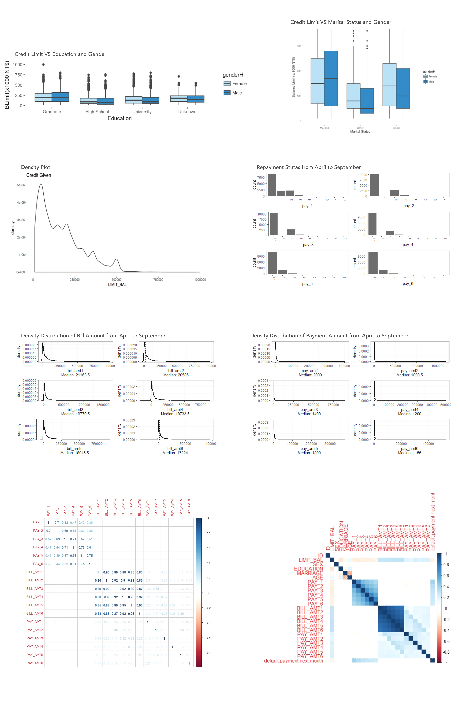

Back in 2005, credit card issuers in Taiwan faced a cash and credit card debt crisis, with delinquency expected to peak in the third quarter of 2006. In order to increase market share, cardissuing banks in Taiwan over-issued cash and credit cards to unqualified applicants. At the same time, most cardholders, irrespective of their repayment ability, overused credit cards for consumption purposes and accumulated heavy cash and credit card debts. This crisis caused a blow to consumer financial confidence and presented a big challenge for both banks and cardholders.
We are looking at the credit crisis of 2005 in Taiwan. It might be possible that banks are very cautious of customers that could potentially default. Suppose a bank in September 2005 asks us to predict which customers would default next month in October 2005, we are provided with the following dataset, which consists of default payments from a major credit card company in Taiwan 2005. The data set consists of 13,276 instances and 24 attributes consisting of gender, education profile, marital status, age, history of statement balance, payment status and binary status of default (1 or 0).
The report applies supervised learning models including logistic regression, support vector machine and random forest on a credit card dataset to predict whether customers will default or not next month (October 2005) based on their credit history in the last 6 months (from April to September 2005). The report, in particular, utilizes the panel data approach to explore the relationship among amount of previous payment, repayment status and amount of bill statement.
Visit Site
We obtained 28 variables in the movie dataset from 5043 movies and 4906 posters, spanning across 100 years in 66 countries. For example, there are 2399 unique director names, and thousands of actors/actresses. Our goal is to predict the IBDB Score of a movie based on these attributes.
We first considered the linear regression model, where we conducted both variable and model selection using subset selection and stepwise method. We also utilized ridge and lasso regression to include all the variables, and we found that lasso regression performs well in our case as it forces some of the coefficients to be 0 and therefore mitigated the problem of multicollinearity and overfitting.
We then considered non-parametric approaches including principle component analyses and tree methods. With a few components, the principle regression analysis performs the worst among all the models. Partial least squares, on the other hand, significant improves over the principle regression analysis and has the training and test error comparable to the linear models.
For the tree methods, we considered regression tree, tree pruning, bagging, random forests and boosting. To our surprise, the tree methods have in general yielded more than 30% improvement over our previous models in terms of mean square of errors (MSE). This non-parametric approach beats all the regressions we conducted previously.
Visit Site
There are three regional natural gas markets could be identified in the world: America, Europe, and Asia with limited trade between them because of the cost of gas transportation over large distances, which resulting large price differences. One of the reason is that Japan is the world’s largest importer of liquefied natural gas (LNG), accounting for 36 percent of worldwide imports. However, the proven reserves of gas per region is pretty comparable between Asia and America.
My commodity dissertation focus on natural gas market in Japan & China based on presenting an updated and thorough overview of demand/supply; performing comparative analysis of natural gas market based on statistical & historical data; providing valuable potential findings for future development.
Visit Site